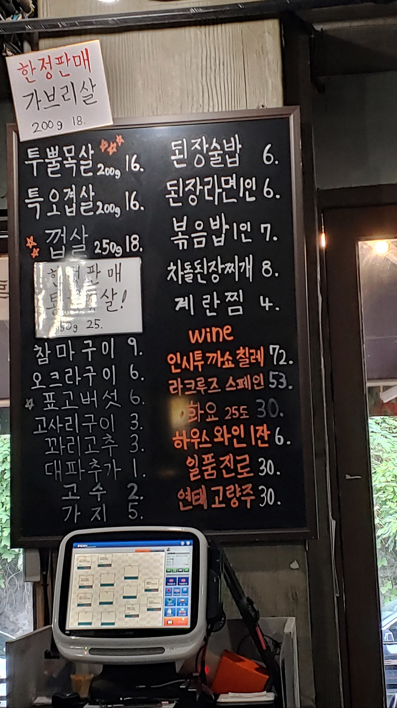

길목
4.6
View : 201,488 | Write : 132 | Pick : 5,868
| 주소 |
서울특별시 강남구 영동대로129길 10 서울시 강남구 삼성동 58-6 |
| 전화번호 | 02-518-9710 |
| 음식 종류 | 고기 요리 |
| 가격대 | 만원-2만원 |
| 주차 | 주차공간없음 |
| 영업시간 | 16:00 - 23:00 |
| 휴일 | 일 |
| 메뉴 |
투뿔목살 (200g)
18,000원 특오겹살 (200g) 18,000원 껍살 (250g) 20,000원 된장술밥 8,000원  |
| 리뷰(132) |
전체 (132) | 맛있다 (110) | 괜찮다 (14) | 별로 (8) |
| 마리티 | 코로나풀리고 지인들과 오랜만에 갔는데.. 첫 주문을 목살2/삼겹살2 시키고 화장실 갔다왔는데 나중에 결제금액 이상해서 보니까 저없는사이 목살만 5인분 들고 왔다가 다시 가져갔다가 정정해서 가져 왔다는데 그것도 결국 5인분으로 주문 넣어서 가져온거 같다라더군요. 작년에 비해 고기는 2000원씩 다 올랐고, 된장찌개엔 차돌박이가 빠진상태로 가격은 그대로 유지.. 중간에 주문한건 안나와서 물어보니 죄송하다는 사과 한마디없이 그제서야 주문 들어가고(같이 주문한 라면 다 먹을동안 안나옴) 참 직원도 많고 심지어 주문하는곳 바로 앞에서 먹었는데도 이렇게 실수가 잦은지 이젠 더이상 가기 싫어지네요. |
| 고균 | 청담 목살맛집 길목이에요! 퇴근시간에 가니깐 사람이 장난아니게 많더라구요! 기본적인 찬도 잘나왔구 껍살은 다른곳에서는 본적없었는데 궁금하더라구요 그래서 시켜봤습니다! 껍살은 껍데기 + 항정살을 합친게 껍살이라구하더라구요! 와 근데 진짜 대존맛인게 껍데기의 쫀득함과 목살의 부드러움이 섞여서 대박이었습니다.. 가격대는 조금 높지만 아깝지않은 그런맛이었어요!! 길목 강추합니다! |
| 다람이 | 이제서야 여기를 가보게 된 나, 반성해 바로 옆 동네에서 n년째 회사를 다니고 있는데 벼르고 벼르다 드디어 가게 된 청담 길목. 다행히 토요일 오후 늦은 저녁에 가서 대기 없이 바로 입장! 투뿔목살과 껍살이 인기인 것 같길래 나눠서 주문. 고기는 직원 분께서 구워주셔서 먹기 직전에만 알아서 조금 구우면 됨! 목살은 껍살이 익어가는 동안 먼저 먹을 것을 추천해주십니다. 덜 익힌 상태에서 멜젓에 담궜다가 다시 불 위에서 살짝 더 구워주면 된다고 알려주세요. 처음에는 소금에 콕 찍고 와사비를 곁들여 먹었는데 고기가 보드랍고 야들하고 육즙도 나오는 게 완전 목살계의 신세계! 멜젓의 풍미도 은은하게 느껴져서 너무 맛있었어요. 양파무침과의 달큰한 맛과도 잘 어울려서 번갈아가면서 계속 먹었어요. 지금도 그 맛을 상상하니 입에 침이 고일 정도. 껍살은 항정살에 껍데기가 붙어 나오는 건가봐요. 그래서그런지 지방이 많은 편이라 개인적으론 약간 느끼. 맛이 없는 건 아니지만 목살에 비해 엄청 맛있던 건 아니므로 다음엔 목살만 먹..을래요.. 된장술밥 껍살에 기름진 입안을 정화해준 구원자. 흔한 고깃집의 된장찌개일줄 알았는데 칼칼한 맛의 된장찌개에 밥이 들어가있어서 그냥 술술 들어가요. 껍살먹다가 이거 먹으니까 막 퍼먹게 되더라고요. |